Artist
Susan Sharifi
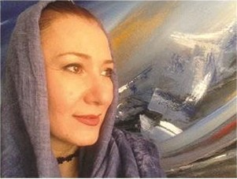
- Born1963
- NationalityIranian
- Works24
- Dated2015–2016
- CatalogueContemporary Iranian Art, Tehran 2017
Works24 artworks

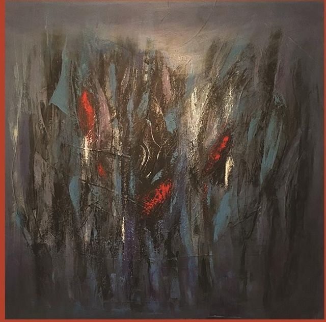

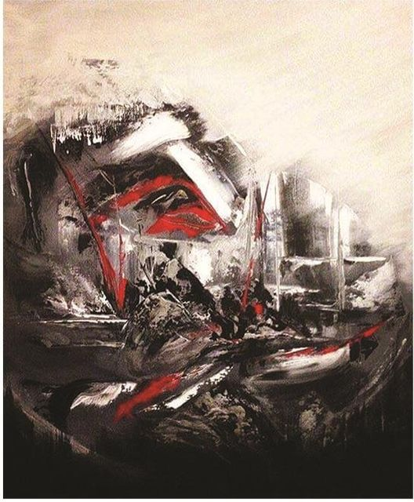

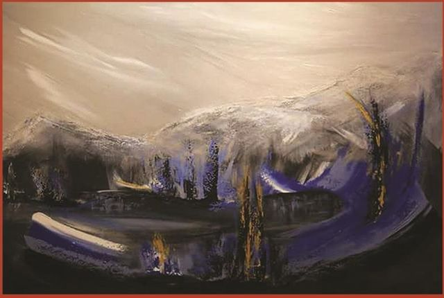

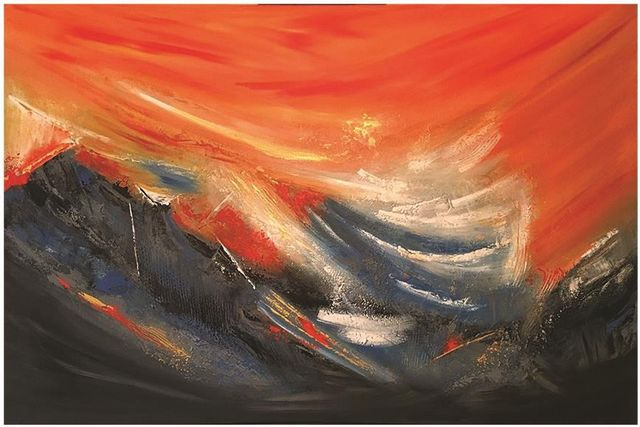

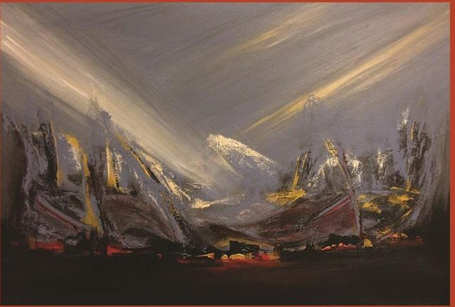

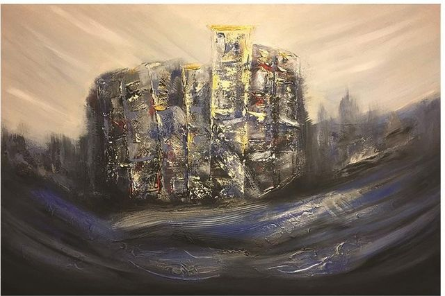

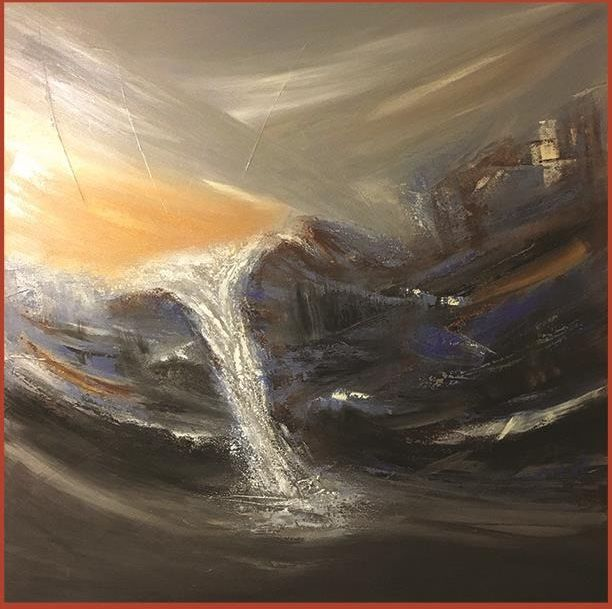

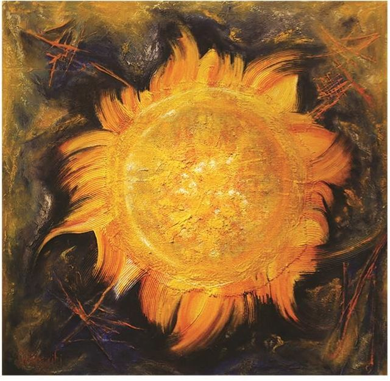

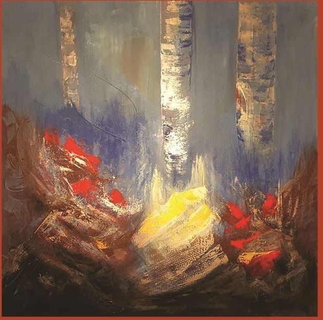

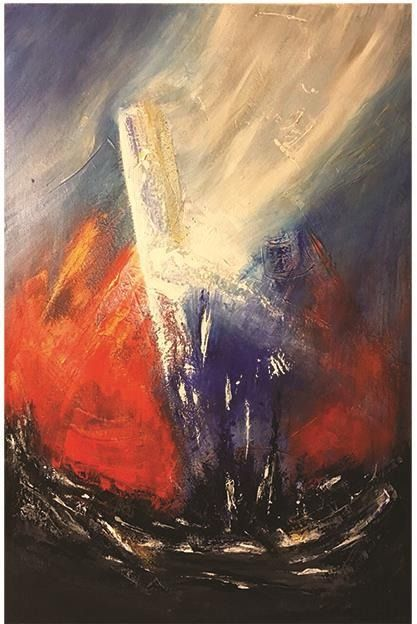

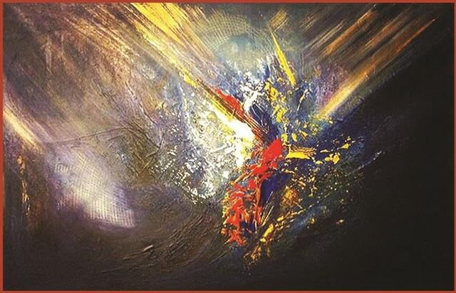

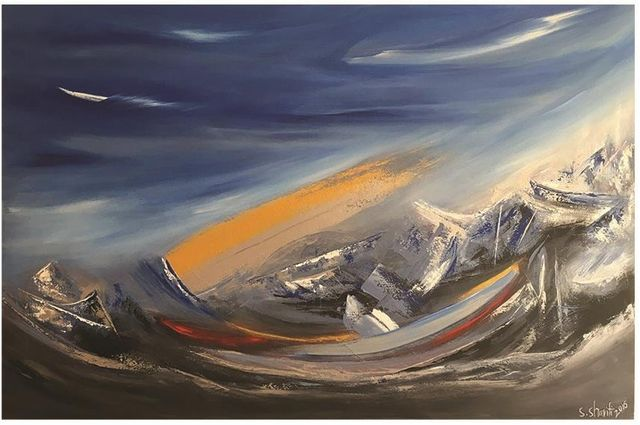

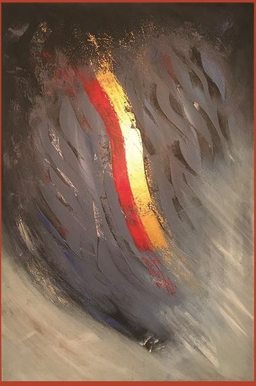

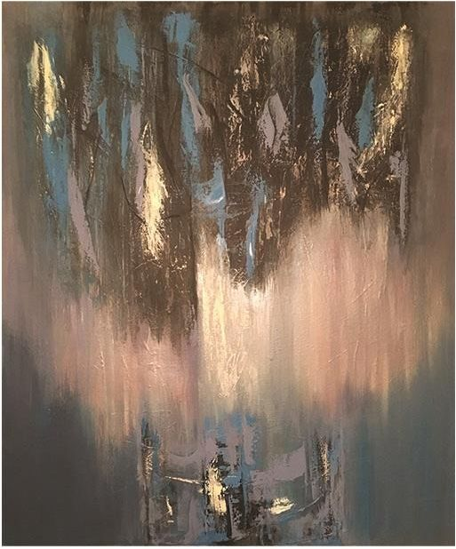

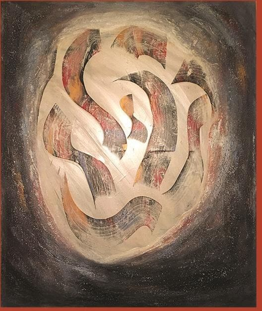

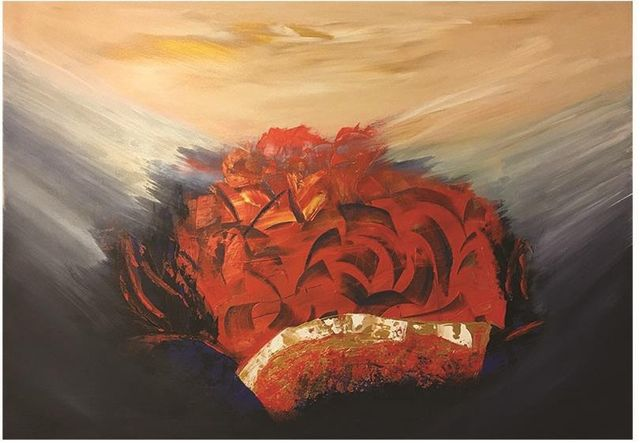

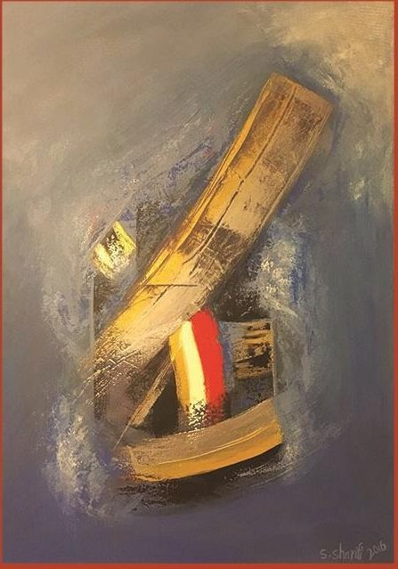

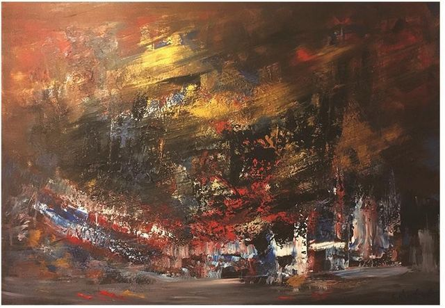

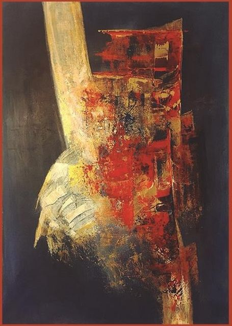

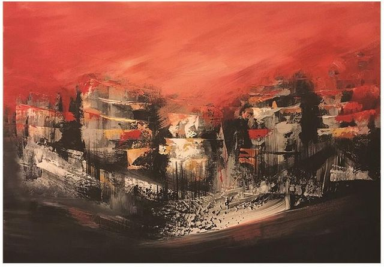

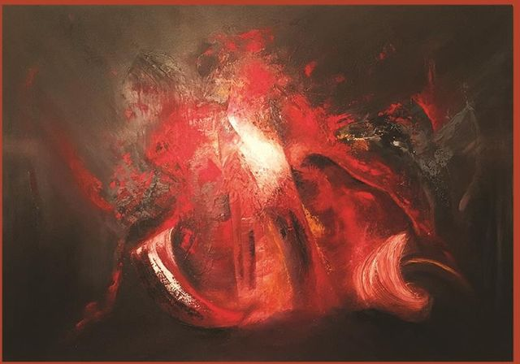

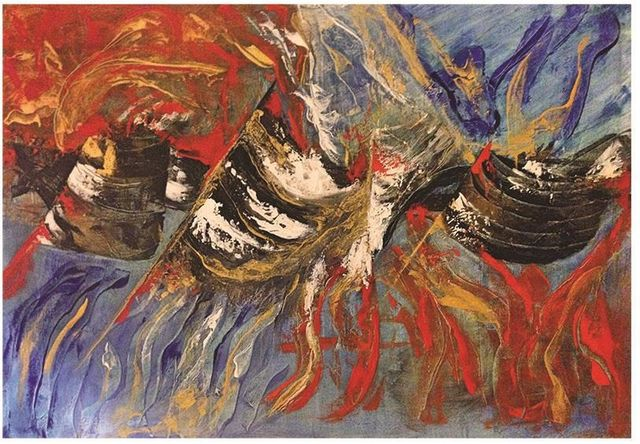

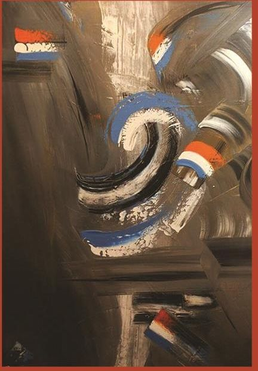

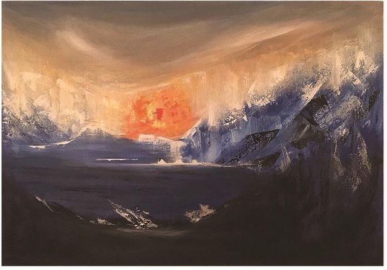
History of experienceBiography · education · exhibitions · awards
Biography
It is about 20 years that she works professionally as a painter,during her artistic career. She has experienced different painting styles, but in the end,she was much more interested in Abstract and Abstract impressionism, and her recent works have the same structure.
Solo exhibition
- 2016Amin art gallery|Tehran – Iran
- 2015Naghshe jahan art gallery|Tehran – Iran
Group exhibition
- 2016Tehran Milad Tower|Tehran – Iran
- 2015Tehran Milad Tower|Tehran – Iran
- And more several group exhibitions.
Source: the Sobhan Gallery artist catalogue “Sobhan Gallery. C. Susan Sharifi.pdf”.